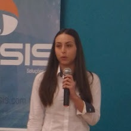
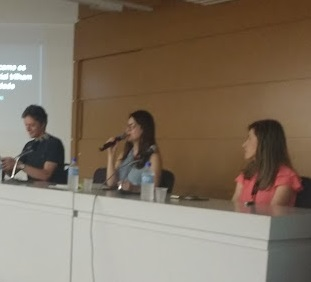

Sobre a SEMINCO
Palestras
Palestras sobre os temas relevantes da atualidade na área de tecnologia.
Mesa redonda
Mesa redonda sobre Big Data com participação de pessoas notáveis da área.
Artigos Científicos

Tradional apresentação de artigos, fruto de trabalhos de pesquisa, doutorado, mestrado e conclusão de curso.
Este evento foi criado em 1992 através de um grupo de professores e alunos da FURB interessados em divulgar a produção científica e pesquisas de computação.
Inicialmente criado como Seminário Interno de Computação, logo nos primeiros anos ultrapassou os muros de nossa Universidade e conquistou espaço na comunidade e mercado de informática regionais, passando-se a chamar Seminário de Computação. Também foi tendo seu formato alterado: palestras, mini-cursos, feiras, tecnologia. Contudo, nunca deixou de realizar uma chamada de artigos científicos, motivando os pesquisadores a divulgar os resultados de seus trabalhos.
Ao realizarmos o XXV SEMINCO - Seminário de Informática e Computação, nos dias 2 a 4 de outubro de 2017, colocamos mais um tijolo nesta sólida construção, resgatando seu caráter técnico/científico ao realizar um evento baseado na produção científica nacional.
Além da tradional apresentação de artigos, fruto de trabalhos de pesquisa, doutorado, mestrado e conclusão de curso, nesta edição realizaremos também uma sessão de pôsteres, abrindo espaço para divulgação de pesquisas de iniciação científica e trabalhos em andamento.
Agradecemos a todos os envolvidos na organização do evento e desejamos que este compartilhamento de informação gere muito conhecimento.
Local
- Universidade Regional de Blumenau - FURB
- R. Antônio da Veiga, 140, Blumenau
- dsc@furb.br
- -